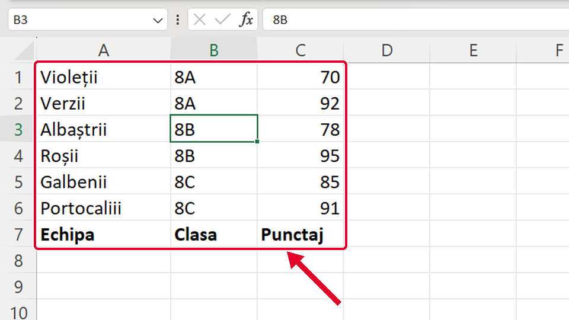
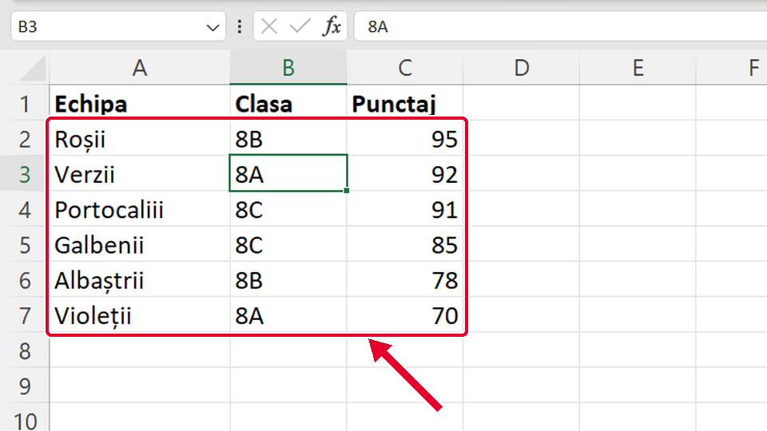
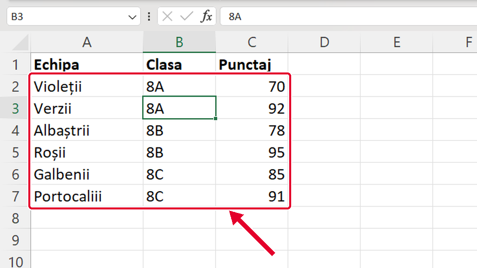

Început
Sortezi după două criterii
Taste: Spațiu = pauză / continuă · ← și → = pasul anterior / următor · cu Tab ajungi la „Rulează singur”; acolo Spațiu îl pornește sau îl oprește. Poți apăsa și pe film.

Legat de asta
Se deschid într-o filă nouă, ca să nu pierzi filmul de aici.
- ÎnainteSortezi tot tabelul după o coloană ↗
Sortezi după o singură coloană, cu butonul mic din fila Date (Data): rândurile se mută întregi.
- ÎnainteScris îngroșat cu Ctrl+B ↗
Rândul de sus, cu titlurile coloanelor, este capul de tabel: îl scrii îngroșat cu Ctrl+B.
Dacă nu-ți iese
Alege ce vezi pe ecran.
Rândul cu titlurile, Echipa · Clasa · Punctaj, a coborât la sfârșitul tabelului.

De ce: În fereastra Sortare ai debifat Datele mele au anteturi (My data has headers). Excel a sortat și primul rând, ca pe oricare altul.
Ce faci:
- Apeși Ctrl+Z.
- Deschizi din nou Sortare (Sort) și bifezi Datele mele au anteturi (My data has headers).
- La Sortare după (Sort by) trebuie să vezi numele coloanelor, de exemplu Clasa; apoi OK.
Taste: Ctrl+Z
Tabelul e în ordinea punctajului, dar clasele sunt amestecate.

De ce: Primul criteriu contează cel mai mult. Ai pus Punctaj la Sortare după (Sort by) și Clasa abia la Apoi după (Then by), iar Clasa mai contează doar între punctaje egale.
Ce faci:
- Pe fila Date (Data) apeși Sortare (Sort).
- La Sortare după (Sort by) alegi Clasa; la Apoi după (Then by), Punctaj, cu Largest to Smallest.
- Apeși OK.
Clasele sunt grupate, dar în fiecare clasă punctajul mic e sus.

De ce: Ai sortat doar după Clasa. Fără al doilea nivel, Excel lasă rândurile din aceeași clasă în ordinea în care erau.
Ce faci:
- Pe fila Date (Data) apeși din nou Sortare (Sort).
- Apeși Adăugare nivel (Add Level). La Apoi după (Then by) alegi Punctaj, cu Largest to Smallest.
- Apeși OK.